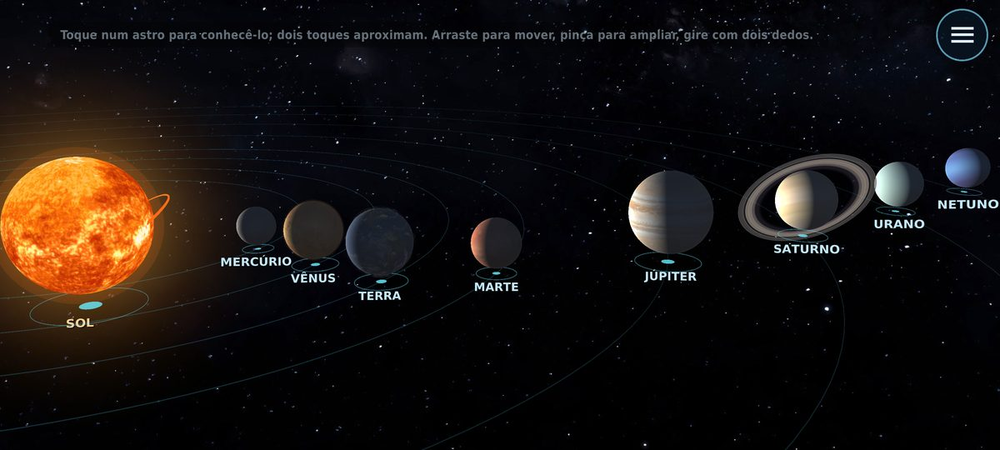
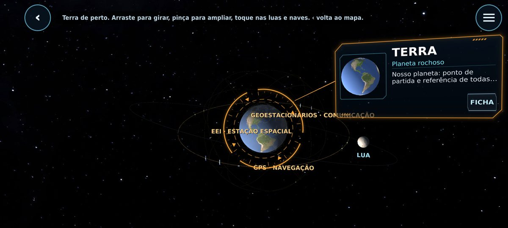

Passo a passoComo instalar
- Toque em Baixar para Android e aguarde o download do arquivo IFAC-Expedicao-Solar.
- Abra o arquivo baixado (na notificação ou na pasta Downloads).
- Se o Android pedir, permita instalar apps desta fonte para o navegador e toque em Instalar. O app não vem da Play Store, por isso o aviso aparece.
- Se aparecer o Google Play Protect, toque em Verificar app: o Google analisa o arquivo e mostra “Este app parece seguro”. Depois toque em Instalar. Em celulares Xiaomi, Redmi e POCO, a verificação de segurança da Xiaomi também roda; aguarde terminar.
- Abra IFAC - Expedição Solar. Na primeira vez em realidade aumentada, o celular pode pedir para instalar o Google Play Services for AR. Se o celular não for compatível com esse serviço do Google, o app entra sozinho na RA simplificada: a câmera mostra o ambiente e os astros ficam no lugar quando você gira o celular.
Apareceu “o pacote parece ser inválido” ou “app não instalado”? Baixe de novo com boa conexão (o download pode ter ficado incompleto), confira se há pelo menos 300 MB livres, não toque em “Não instalar app” no Play Protect e, se tiver uma versão de teste antiga deste app, desinstale-a antes. No estande, a equipe pode passar o app direto pelo Quick Share.
Funciona em Android 7.1 ou superior, de 32 ou 64 bits. Quem tiver iPhone pode usar os aparelhos do estande.
No estande e em casaComo usar
Realidade aumentada (no estande)
Toque em Iniciar em realidade aumentada e aponte a câmera para o QR do estande, o mesmo que trouxe você até esta página. Os astros aparecem flutuando ali. Funciona em celulares compatíveis com o ARCore e precisa de ambiente bem iluminado; se estiver escuro, o app avisa.
Demonstração 3D (em qualquer lugar)
Sem câmera e sem internet: o mesmo mapa, com o céu estrelado da Via Láctea ao fundo. Escolha entre Posições de hoje (órbitas calculadas para a data) e Planetas alinhados.
Gestos
- Um toque num astro: identifica e abre o resumo.
- Dois toques: aproxima o astro, com suas luas e naves.
- Arrastar: move o mapa; pinça: amplia; dois dedos girando: gira.
- Menu ☰: objetos, modos, órbitas, nomes, som e créditos.
O que dá para explorar
O Sol, os 8 planetas, 20 luas, os anéis de Saturno, a Estação Espacial Internacional, sondas em Marte e os conjuntos de satélites GPS e geoestacionários, cada um com ficha de dados e fontes.


Ciência no appO Sistema Solar em números
| Planeta | Diâmetro | Distância média do Sol | Ano (uma volta no Sol) | Luas conhecidas |
|---|---|---|---|---|
| Mercúrio | 4.879 km | 57,9 milhões de km | 88,0 dias | 0 |
| Vênus | 12.104 km | 108,2 milhões de km | 224,7 dias | 0 |
| Terra | 12.756 km | 149,6 milhões de km | 365,2 dias | 1 |
| Marte | 6.792 km | 228,0 milhões de km | 687,0 dias | 2 |
| Júpiter | 142.984 km | 778,5 milhões de km | ≈ 11,9 anos | 95 |
| Saturno | 120.536 km | 1.432,0 milhões de km | ≈ 29,4 anos | 274 |
| Urano | 51.118 km | 2.867,0 milhões de km | ≈ 83,7 anos | 28 |
| Netuno | 49.528 km | 4.515,0 milhões de km | ≈ 163,7 anos | 16 |
Fonte: NASA/NSSDC Planetary Fact Sheet (nssdc.gsfc.nasa.gov/planetary/factsheet). Contagens de luas mudam com novas descobertas.
Por que o app usa escala ilustrativaSe o Sol fosse uma bola de 1 metro…
Cálculo com o diâmetro do Sol (1.391.400 km) e os valores da tabela. Em escala real, os planetas seriam pontos invisíveis na tela; por isso o app comprime distâncias e amplia tamanhos, e avisa que a escala é ilustrativa. Em Posições de hoje, as direções vêm do modelo kepleriano aproximado do NASA/JPL (ssd.jpl.nasa.gov/planets/approx_pos.html).
Seus dadosPrivacidade
A câmera é usada só no próprio celular, para ler o QR e posicionar os astros. O app não envia imagens, não coleta dados pessoais, não tem anúncios e funciona sem internet depois de instalado. As preferências (som, movimento reduzido, nomes e órbitas) ficam salvas apenas no aparelho.
Quem fezCréditos
- Equipe
- Circuito Ciências
- Coordenador Geral
- Dr. Cleyton Souza
- Coordenadora de Ações
- Msc. Alcilene Balica
- Coordenador de Desenvolvimento e Tecnologias aplicadas à Física
- Esp. Mauricio Cunha
- Roteiro e Desenvolvimento
- Departamento de Pesquisa em Tecnologias
- Desenvolvedor
- Mauricio Cunha
- Versão
- CONC&T2026
Dados e imagens
- Dados: NASA/NSSDC, NASA/JPL Solar System Dynamics, ESA, GPS.gov e NASA Science (cada ficha do app cita a sua).
- Texturas do Sol, dos planetas, da Lua e o céu com a Via Láctea: Solar System Scope, licença CC BY 4.0.
- Leitura de QR: ZXing.Net (Apache 2.0). Motor: Unity, com ARCore do Google.
- Efeitos sonoros, retículos, órbitas, naves e demais luas: gerados pelo próprio app.
Conferir o arquivo (opcional)
Código SHA-256 do APK publicado nesta página:
f9e98ac664524f14377194fb43972775eb1c20c06437c1d6418e47d45e73408e